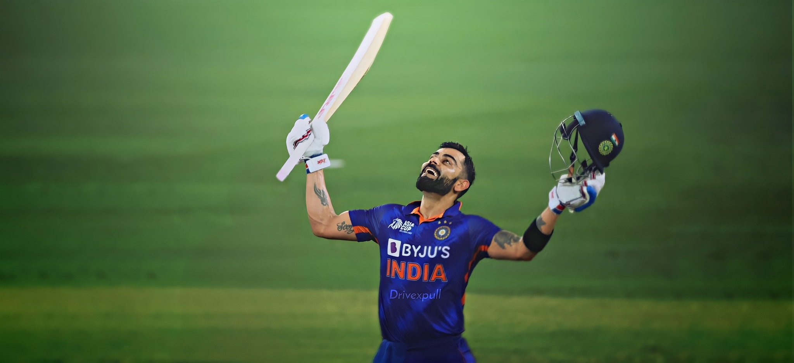

TRIBUTE PAGE FOR KING KOHLI

PERSONAL LIFE
The Young and talented right-handed batsman, Virat Kohli was born on the 5th of November in 1988 in Delhi. His father was Prem Kohli and his mother Saroj Kohli. His father worked as a lawyer and he passed away in December 19th, 2006 due to brain stroke. Virat has an elder brother, Vikash and an elder sister, Bhavna.Kohli's romantic association with Bollywood actress Anushka Sharma, which commenced in 2013, earned the duo the moniker of "Virushka". The couple named their first born child, a daughter, Vamika. The child's name, Vamika, is derived from Sanskrit, meaning "little goddess".
CAREER SUMMARY
- In 2008, he was the captain of the under 19 Indian Cricket team in the World Cup and India also won that match.
- He made his debut In One Day International against Sri Lanka in the Ideal Cup in 2008, when both the great batsman Virat Tendulkar and Virendar Sewag were injured.
- In January 2010, Kohli was given the opportunity in tri-nation ODI tournament in Bangladesh, as Tendulkar was rested for the event. During the series, Kohli became just the third Indian player to score two ODI centuries before the age of 22.
- Kohli was appointed the vice-captain for the 2012 Asia Cup in Bangladesh on the back of his fine performances in Australia. Kohli was in fine form during the tournament, finishing as the leading run-scorer with 357 runs at an average of 119.
- In June 2013, Kohli featured in the ICC Champions Trophy in England which India won
RECORDS
Test records
- Most Wins as captain of India, with 40 wins out of 68 matches.
- Four Test double-hundreds in four consecutive series.
ODI records
- Most ODI centuries while chasing (26).
- Most ODI centuries in India (21).
- Fastest to - 8,000 runs(175 innings), 9,000 runs(194 innings), 10,000 runs(205 innings), 11,000 runs(222 innings), 12,000 runs(242 innings).
T20I records
- Most runs in T20 internationals - 4,008 runs.
- Most Fifty plus scores in the career - 38 (including 37 fifties and 1 century).
- Highest career batting average in T20I - 52.73.
- Fastest to - 3,000 runs(81 innings), 3,500 runs(96 innings).
- Most player of the match(15 times) and player of the series awards(7 times).
IPL records
- Most runs in Indian Premiere League - 7,263 runs.
- Most runs in a single edition of IPL - 973 runs (2016).
- Only player to be involved in three double-century plus stands , two times with AB de Villiers and once with Chris Gayle.
- Most runs against Delhi Capitals(1030).
- Most hundreds in a season (4) and in the league(7).
HONOURS AND AWARDS
National honours
- 2013 – Arjuna Award, second highest sporting honour.
- 2017 – Padma Shri Ribbon.svg Padma Shri , India's fourth highest civilian award.
- 2018 – Major Dhyan Chand Khel Ratna Award, India's highest sporting honour.
Other honours
- People's Choice Awards India For Favourite Sportsperson: 2012.
- GQ Sportsman of the year: 2013.
- CNN-News18 Indian of the Year: 2017.
- Delhi & District Cricket Association (DDCA) renamed a stand after Kohli at Feroz Shah Kotla, Delhi.
FOR MORE INFO